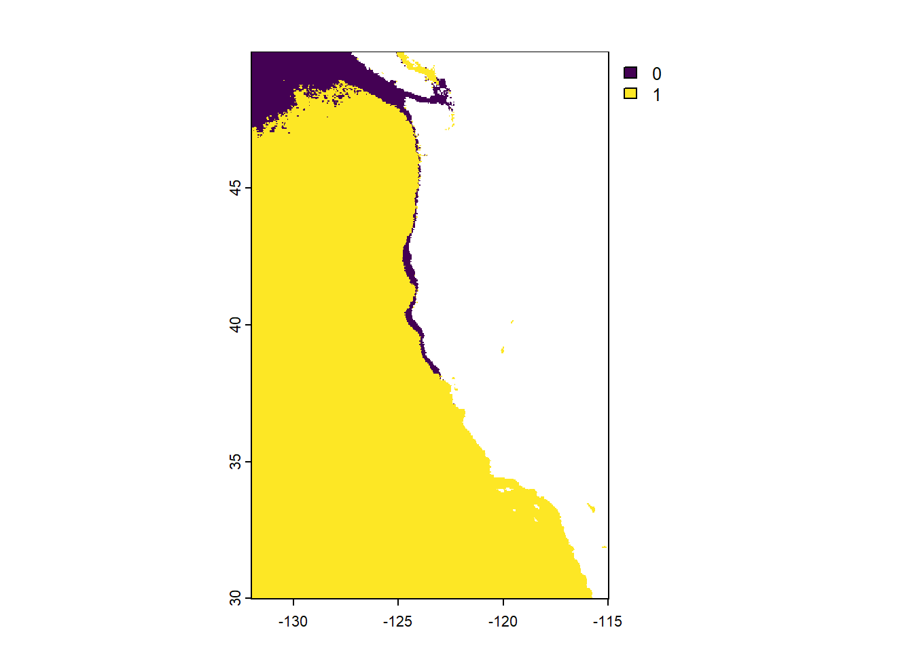
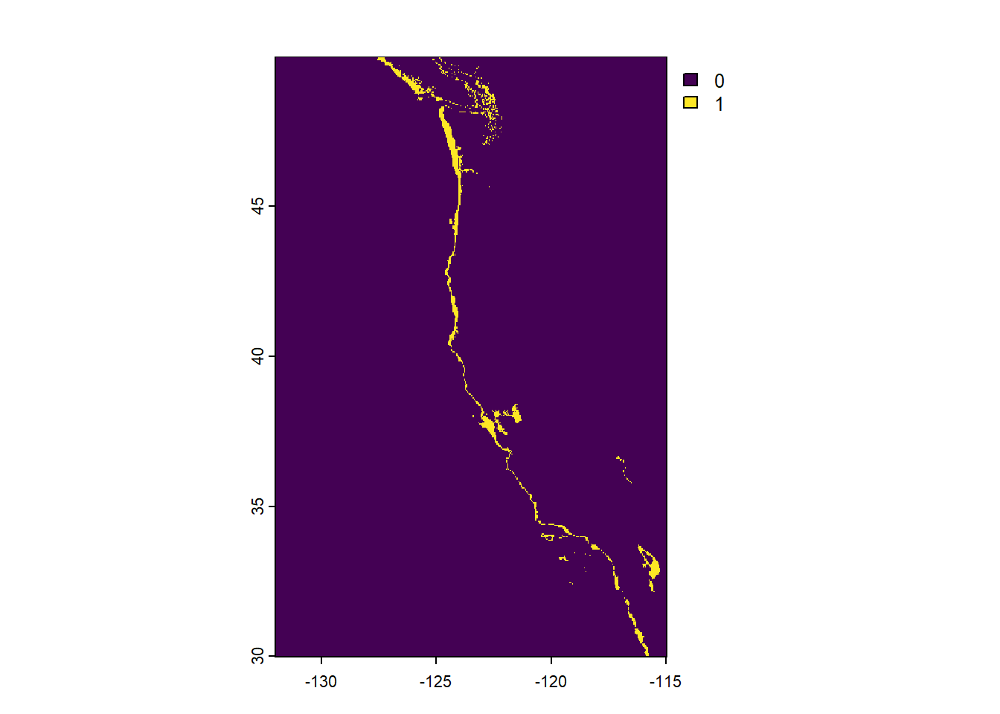
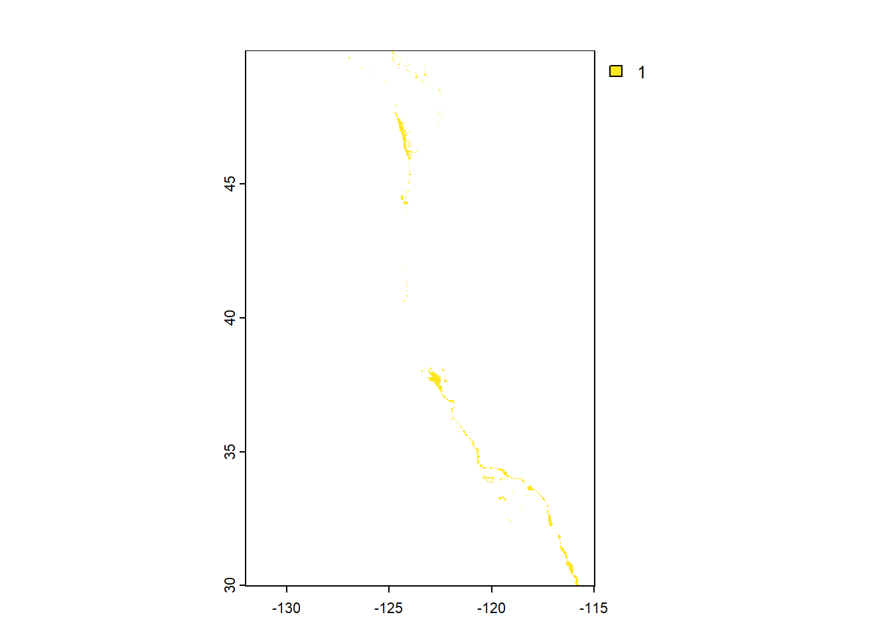
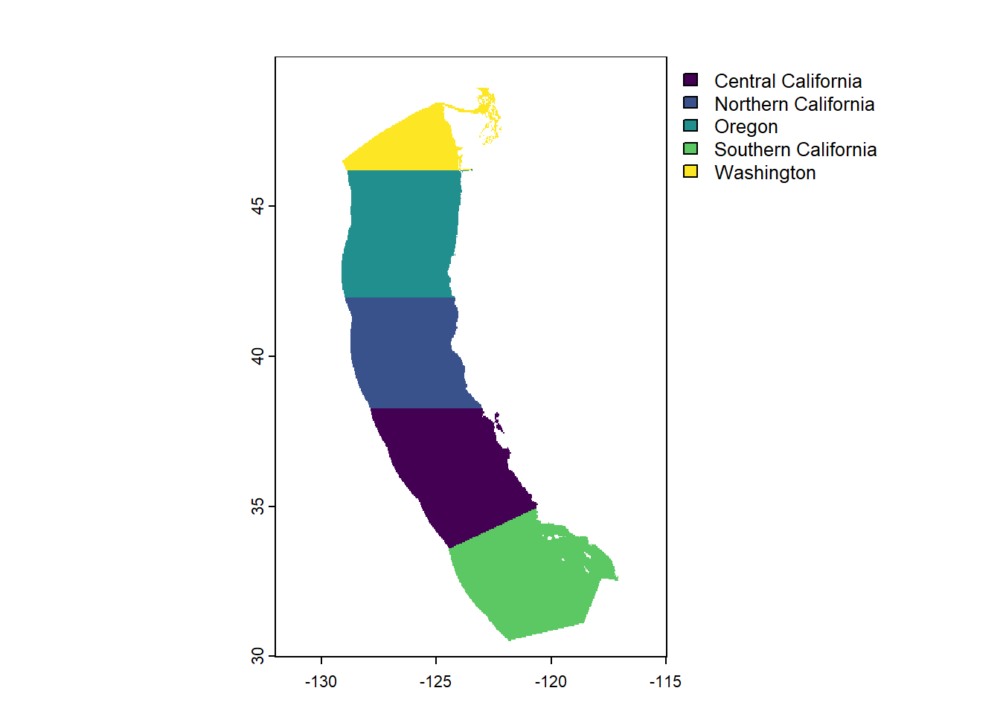
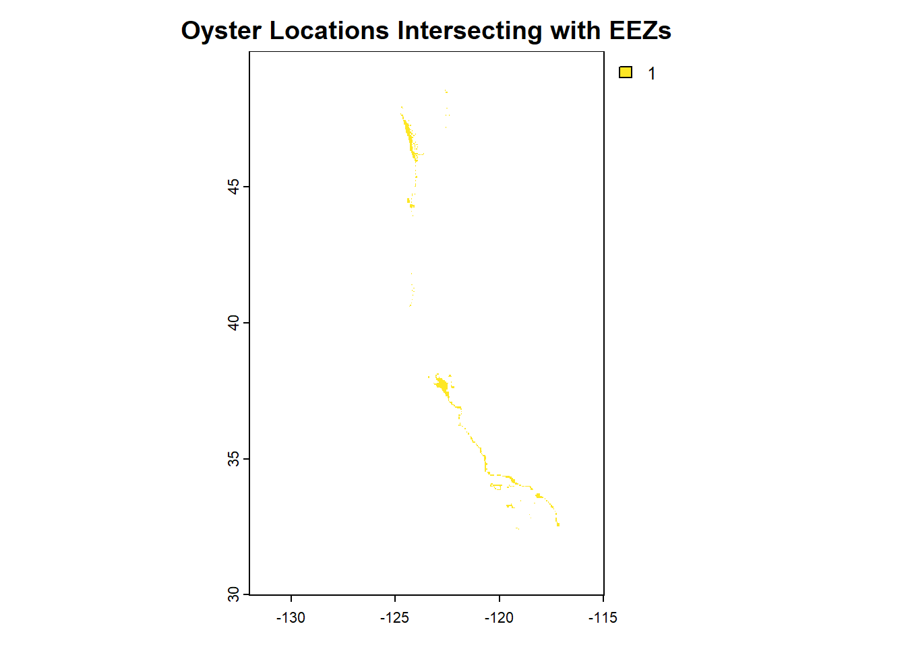
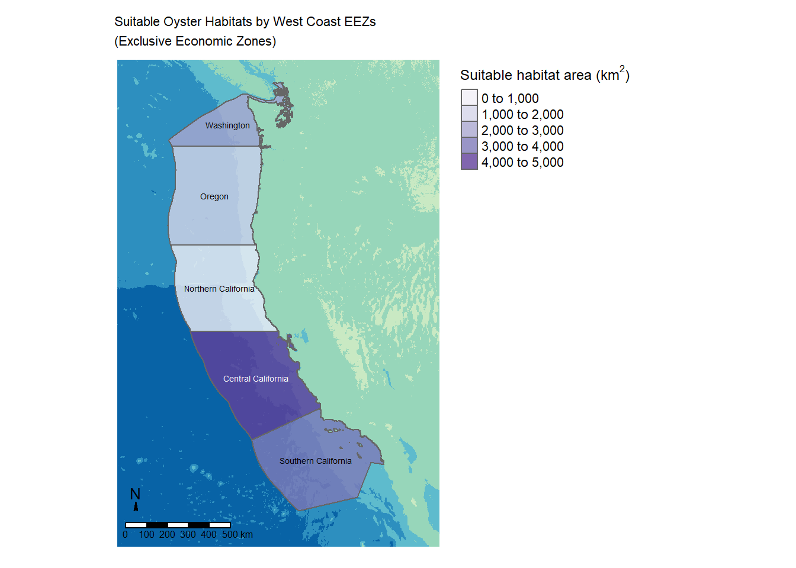

Code
# Load packages
library(tidyverse)
library(here)
library(tmap)
library(stars)
library(terra)
library(sf)
library(raster)
library(kableExtra)Suitable aquaculture locations in West Coast EEZs
The West Coast contains multiple Exclusive Economic Zones (EEZs). With appropriate data on sea surface temperature and depth in these zones, we can determine suitable locations for multiple marine aquaculture species. This information could be used to guide development locations for marine aquaculture.
First, we determine suitable locations in each West Coast EEZ for oysters. Then, we will take that process and transform it into a function that can determine suitable locations for any marine aquaculture species as long as we know their required sea surface temperature and depth.
# Load packages
library(tidyverse)
library(here)
library(tmap)
library(stars)
library(terra)
library(sf)
library(raster)
library(kableExtra)# Read in data
wc_eez <- st_read(here("data", 'wc_regions_clean.shp'))
temp_2008 <- rast(here("data", "average_annual_sst_2008.tif"))
temp_2009 <- rast(here("data", "average_annual_sst_2009.tif"))
temp_2010 <- rast(here("data", "average_annual_sst_2010.tif"))
temp_2011 <- rast(here("data", "average_annual_sst_2011.tif"))
temp_2012 <- rast(here("data", "average_annual_sst_2012.tif"))
depth <- rast(here("data", "depth.tif"))# combine temp rasters into stack
sst_stack <- c(temp_2008, temp_2009, temp_2010, temp_2011, temp_2012)# Check if crs match
if(st_crs(wc_eez) == st_crs(depth)) {
print("CRSs match")
} else{
warning("Updating coordinate reference systems to match")
# transform data to match
wc_eez <- st_transform(wc_eez, st_crs(depth))
}
## [1] "CRSs match"
if(st_crs(sst_stack) == st_crs(depth)) {
print("CRSs match")
} else{
warning("Updating coordinate reference systems to match")
# transform data to match
sst_stack <- project(sst_stack, crs(depth))
}
## [1] "CRSs match"# Find average SST
mean_sst <- app(sst_stack, mean)
# Convert average SST from Kelvin to Celsius
mean_sst_c <- mean_sst - 273.15# Crop depth raster to match the extent of the SST raster
depth_crop <- crop(depth, mean_sst_c)
# Resample the depth data to match the resolution of the SST data using the nearest neighbor approach
depth_resample <- resample(depth_crop, mean_sst_c, method = "near")
# check that the depth and SST match in resolution, extent, and CRS
sst_depth_test <- c(depth_resample, mean_sst_c)# set reclassification matrix for temperature
oyster_sst <- matrix(c(-Inf, 11, 0,
11, 30, 1,
30, Inf, 0),
ncol = 3, byrow = TRUE)
# set reclassification matrix for depth
oyster_depth <- matrix(c(-Inf, -70, 0,
-70, 0, 1,
0, Inf, 0),
ncol = 3, byrow = TRUE)
# use reclassification matrix to reclassify sst
reclassified_sst <- classify(mean_sst_c, rcl = oyster_sst)
# confirm that it worked with preliminary plot
plot(reclassified_sst)
# use reclassification matrix to reclassify depth
reclassified_depth <- classify(depth_resample, rcl = oyster_depth)
# confirm that it worked with preliminary plot
plot(reclassified_depth)
# Set unsuitable locations to NA, so we can work with suitable locations only
reclassified_sst[reclassified_sst == 0] <- NA
reclassified_depth[reclassified_depth == 0] <- NA
# Set reclassified data to have matching CRSs
reclassified_sst <- project(reclassified_sst, reclassified_depth)
# Multiply reclassified rasters together to find suitable location overlap
reclass_all <- reclassified_sst * reclassified_depth
# confirm that it worked with preliminary plot
plot(reclass_all)
# Rasterize eez data
wc_eez_rast <- rasterize(wc_eez, reclass_all, "rgn")
# confirm that it worked with preliminary plot
plot(wc_eez_rast)
# Crop oyster_locations to the extent of wc_eez_rast
cropped_oyster_locations <- crop(reclass_all, wc_eez_rast)
# Mask the cropped oyster_locations with wc_eez_rast
oyster_eez <- mask(cropped_oyster_locations, wc_eez_rast)
# Preliminary plot of the result
plot(oyster_eez, main = "Oyster Locations Intersecting with EEZs")
# Use cell size to find area in km of masked oyster data
area_cell <- cellSize(oyster_eez,
mask = TRUE,
unit = "km")
# multiply oyster data by area_cell data to find area of eez
eez_area <- oyster_eez * area_cell
# Use zonal function to split suitable cell area into zones
eez_suitable <- zonal(x = eez_area,
z = wc_eez_rast,
fun = 'sum',
na.rm = TRUE)
# Join for plotting
eez <- left_join(wc_eez, eez_suitable, by = "rgn")# Table of area of suitable locations by area in EEZs
kable(eez_suitable, digits = 2,
caption = "Suitable area for oysters in West Coast EEZs",
col.names = c("EEZ Region", "Area (km^2)"))| EEZ Region | Area (km^2) |
|---|---|
| Central California | 4069.88 |
| Northern California | 178.03 |
| Oregon | 1074.27 |
| Southern California | 3757.28 |
| Washington | 2378.31 |
# Map of suitable oyster habitats in West Coast EEZs
tm_shape(depth) +
tm_raster(palette = "-GnBu",
title = "Bathymetry\n(m above and below sea level)",
midpoint = 0,
legend.show = FALSE) +
tm_shape(eez, raster.downsample = TRUE) +
tm_polygons(col = "mean",
palette = "Purples",
alpha = 0.8,
linewidth = 0.2,
title = expression("Suitable habitat area (km"^2*")")) +
tm_text("rgn", size = 0.45) +
tm_compass(size = .5,
position = c("left", "bottom")) +
tm_scale_bar(position = c("left", "bottom")) +
tm_layout(legend.outside = TRUE,
frame = FALSE,
main.title = "Suitable Oyster Habitats by West Coast EEZs\n(Exclusive Economic Zones)",
main.title.size = .7)
# List files to read in
files <- list.files(here("data"), pattern = "average", full.names = TRUE)
# Make a function
aqua_fun <- function (maxsst, minsst, maxdepth, mindepth, species) {
# Read in rasters
sst <- c(rast(files))
wc_eez <- st_read(here("data", 'wc_regions_clean.shp'))
depth <- rast(here("data", "depth.tif"))
#Find mean sst
mean_sst <- app(sst_stack, mean)
# Switch to cel.
mean_sst_c <- mean_sst - 273.15
# crop depth
depth_crop <- crop(depth, mean_sst_c)
# Resample depth
depth_resample <- resample(depth_crop, mean_sst_c, method = "near")
# Suitable sst matrix
animal_sst <- matrix(c(-Inf, minsst, 0,
minsst, maxsst, 1,
maxsst, Inf, 0),
ncol = 3, byrow = TRUE)
# Suitable depth matrix
animal_depth <- matrix(c(-Inf, mindepth, 0,
mindepth, maxdepth, 1,
maxdepth, Inf, 0),
ncol = 3, byrow = TRUE)
# Reclassify
reclassified_sst <- classify(mean_sst_c, rcl = animal_sst)
reclassified_depth <- classify(depth_resample, rcl = animal_depth)
reclassified_sst[reclassified_sst == 0] <- NA
reclassified_depth[reclassified_depth == 0] <- NA
# rematch CRSs
reclassified_depth <- project(reclassified_depth, reclassified_sst)
# Multiple together to combine
reclass_all <- reclassified_sst * reclassified_depth
# Rasterize eez
wc_eez_rast <- rasterize(wc_eez, reclass_all, "rgn")
# Crop reclassified data to eez
cropped_animal_locations <- crop(reclass_all, wc_eez_rast)
# Mask animal locations to only eez
animal_eez <- mask(cropped_animal_locations, wc_eez_rast)
# Find cell area of animal_eez
area_cell <- cellSize(animal_eez,
mask = TRUE,
unit = "km")
# Multiply oyster data by area_cell data to find area of eez
eez_area <- animal_eez * area_cell
# Use zonal function to separate area by EEZ
zonal_area <- zonal(eez_area, wc_eez_rast, "sum", na.rm = TRUE)
# Join for plotting
eez <- left_join(wc_eez, eez_suitable, by = "rgn")
# Map suitable locations by EEZ
tm_shape(depth) +
tm_raster(palette = "-GnBu",
title = "Bathymetry\n(m above and below sea level)",
midpoint = 0,
legend.show = FALSE) +
tm_shape(eez, raster.downsample = TRUE) +
tm_polygons(col = "mean",
palette = "Purples",
alpha = 0.8,
linewidth = 0.2,
title = expression("Suitable habitat area (km"^2*")")) +
tm_text("rgn", size = 0.45) +
tm_compass(size = .5,
position = c("left", "bottom")) +
tm_scale_bar(position = c("left", "bottom")) +
tm_layout(legend.outside = TRUE,
frame = FALSE,
main.title = paste0("Suitable Habitats by West Coast EEZs\n(Exclusive Economic Zones) for ", species),
main.title.size = .7)
}Oysters need a sea surface temperature of 11-30 degrees Celsius and a depth of 0-70 meters below sea level. Let’s use that information to test our function
aqua_fun(30, 11, 0, -70, "Oysters")Red Abalone need a sea surface temperature of 8-18 degrees Celsius and a depth of 0-24 meters below sea level. Let’s use this information to input the new species into our function and confirm that it works for non-oyster species
aqua_fun(18, 8, 0, -24, "Red Abalones")By creating a function, we can easily use all of the workflow created while looking into oysters, and use that to generalize a workflow for all species. Interestingly, the patterns of suitability look very similar for oysters and red abalone. That similarity could be due to the conditions of each EEZ and the relative similarity of requirements between the two species (although they are still certainly different and have different resulting numbers). This function can now be used to assist with aquaculture decisions.
| Data | Source | Link |
|---|---|---|
| Depth | GEBCO Gridded Bathymetry Data | https://www.gebco.net/data_and_products/gridded_bathymetry_data/#area |
| SST | NOAA Global 5km Satellite Sea Surface Temperature Anomaly | https://coralreefwatch.noaa.gov/product/5km/index_5km_ssta.php |
| West Coast EEZs | Marine Regions EEZ Boundaries | https://www.marineregions.org/eez.php |
| Species Requirements | SeaLifeBase | https://www.sealifebase.ca/search.php |